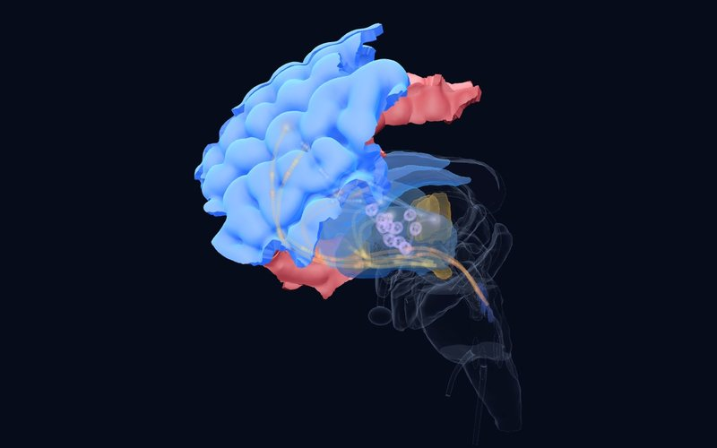
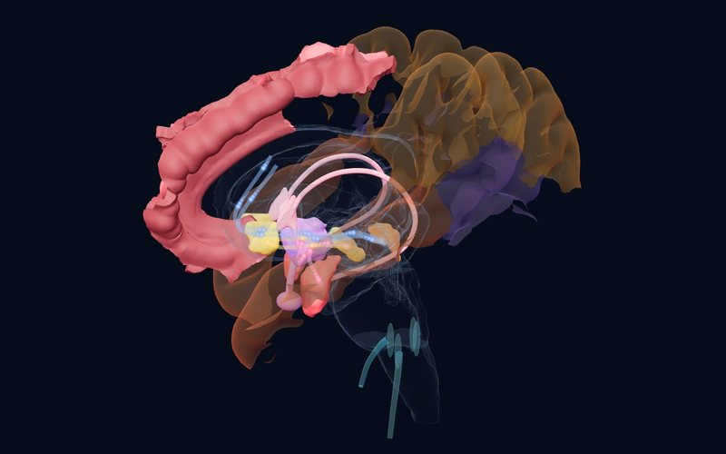
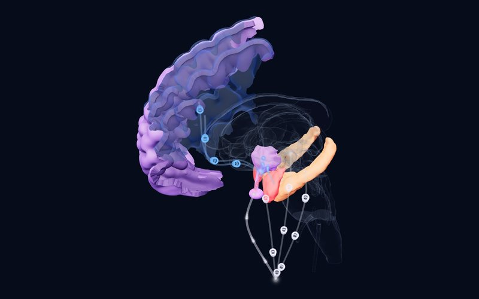

Newsletter · weekly
Once a week: what is happening in brain and mind research?
Each week, four important studies from the field's leading journals; short, clear and with their level of evidence. Tap a study to open its finding, why it matters and a link to the article.
Issue 5 · 6 November 2026 Latest issue
Where does it begin? Chromosomes, first movements and age of onset
Where does a psychiatric condition begin? This issue looks at three kinds of beginning: an underrecognized difference in the sex chromosomes, movement patterns in infancy, and the age at which depression first appears. In the neuroscience corner, the question runs the other way: how does a single magnetic pulse given over the scalp reach individual neurons deep in the brain?
BReviewBiological Psychiatry2026
Sex chromosome aneuploidies: one in 400, and underrecognized in psychiatry
Integrative review of epidemiological, behavioral, neuroimaging and genomic studies
DetailsClose
Finding
Loss or gain of one or more X or Y chromosomes affects about 1 in 400 people, and this review brings together the latest epidemiological, behavioral, neuroimaging and genomic work. Relative to their prevalence, these conditions show a penetrance across several psychiatric diagnoses that often exceeds that of better-recognized genetic risk factors, with substantial symptom burden below diagnostic thresholds. They have large effects on overall brain size and reshape regional anatomy, and the regional effects of X and Y dosage are strikingly correlated. Genomic studies point to X-Y gametologs as highly dosage-sensitive genes that may shape wider effects on gene expression.
Why it matters
Common enough to be met in clinic, these conditions deserve more attention in their own right, and the authors also propose them as genetics-first models for broader psychiatry. They call for new registries built in close partnership with families.
Limitation
A narrative review that generates no new data, and its abstract gives no pooled estimates.
Pavlinek A, Davis S, Ingason A, et al. Sex Chromosome Aneuploidies and the Brain: from Neurodevelopmental Risk to Fundamental Biology. Biological Psychiatry. 2026. doi:10.1016/j.biopsych.2026.10.021
BSystematic reviewEuropean Child & Adolescent Psychiatry2026
What early movement patterns say about later ADHD
19 studies from 1,469 records
DetailsClose

Atlas
Finding
This PRISMA systematic review examined how early motor activity relates to later ADHD traits or diagnosis; 19 of 1,469 records qualified, using actigraphy or accelerometry, parent or multi-informant reports, or a combination. Across methods, heightened or poorly regulated early activity was consistently associated with later ADHD traits or diagnosis, with signals detectable from infancy and toddlerhood. A subset of studies instead linked motor delays or other motor atypicalities to later ADHD traits. Multi-informant and multi-modal approaches generally gave the most robust signal.
Why it matters
It suggests that early motor behaviour could be a useful thread in developmental follow-up, and that both too much and too little movement can matter. The authors also note that the field leans on deficit-focused language and diagnosis-only endpoints, and argue for dimensional frameworks.
Limitation
Its abstract gives no effect sizes, and these associations do not make early activity a diagnostic marker.
Ruffer HC, Jones EJH, Meaburn EL. Infancy & early childhood motor activity levels as predictors of attention-deficit/hyperactivity disorder: a systematic review of cross-sectional and longitudinal studies. European Child & Adolescent Psychiatry. 2026. doi:10.1007/s00787-026-03235-9
CCross‑sectional studyPsychological Medicine2026
Youth-onset and adult-onset depression do not draw the same map
ENIGMA cortical thickness patterns with connectome, neurotransmitter, transcriptome and mitochondria atlases; no participant count in the abstract
DetailsClose
 Atlas
Atlas
Finding
The authors took ENIGMA patterns of cortical thickness change in youth-onset and adult-onset major depression and compared them with the structural connectome and with neurotransmitter, gene expression and mitochondrial atlases. The connectome constrained the changes in both groups, more strongly in adult onset. The likely epicentres differed: the lateral prefrontal cortex in youth onset, and the orbitofrontal cortex with the anterior and middle cingulate gyrus in adult onset. Links to gene categories and mitochondrial features appeared only in adult onset.
Why it matters
It adds a biological angle to the idea that age of onset is a key source of heterogeneity in depression. The prefrontal epicentre in youth is worth reading alongside the late maturation of this region; that link is our interpretation, not the authors'.
Limitation
An analysis of group-level maps and reference atlases rather than of individual patients, so it cannot show cause or apply to a single person.
Xu S, Cui S, Shi X, et al. Neurobiological factors related to differential cortical abnormalities in youth-onset and adult-onset major depressive disorder. Psychological Medicine. 2026. doi:10.1017/s0033291726105777
CExperimental studyProceedings of the National Academy of Sciences (PNAS)2026
The pulse reaches deep: single neurons under TMS
4 neurosurgical patients, 185 single neurons
DetailsClose
 Atlas
Atlas
Finding
In four neurosurgical patients, 185 single neurons were recorded through intracranial microelectrodes while single pulses of TMS were given to the left dorsolateral prefrontal cortex. Forty-six percent of the neurons responded in a time-locked way (26% facilitated only, 19% suppressed only, 1% both), in deep cortical and subcortical structures on both sides, including the putamen and thalamus. Putative inhibitory striato-thalamic neurons tended to increase firing from about 8 ms, peaking at about 80 to 100 ms. Putative excitatory neurons and limbic areas were suppressed on a slower time course lasting up to about 1,000 ms.
Why it matters
It offers a candidate cellular mechanism for an established depression treatment: raising the firing of inhibitory neurons in executive control networks while suppressing limbic excitatory drive. It also shows at the level of single cells how a superficial cortical target can reach deep structures.
Limitation
Only four patients and single pulses rather than the repeated protocols used in treatment; the network-level finding rests on one participant.
Dickey CW, Hassan U, Kawasaki H, et al. Transcranial magnetic stimulation to the dorsolateral prefrontal cortex modulates single-neuron activity in humans. Proceedings of the National Academy of Sciences (PNAS). 2026. doi:10.1073/pnas.2610803123
Read the full issue → with the structure of the week, a question for readers and references
Filter the archive
20 studiesNo studies match this filter.
Issue 4 · 30 October 2026
The moment of crisis, rapid help and the circuitry of loneliness
BSystematic review, meta‑analysisCurrent Psychiatry Reports2026
Helping young people in suicidal crisis outside hospital: how well do crisis services work?
15 studies, 15 crisis interventions
DetailsClose
 Atlas
Atlas
Finding
Fifteen studies evaluating 15 crisis interventions were reviewed for children and adolescents in acute crisis because of severe depression, suicidal ideation or self-harm. Four brief, structured interventions reduced suicidal thoughts, suicide attempts and emergency visits. Seven family-focused interventions strengthened family communication and cohesion and reduced hospital admissions; three that linked young people to community services improved continuity of care.
Why it matters
Intensive support in the young person's own setting that involves the family may be a promising alternative to admission in some cases. It shows once more how decisive the family's role is at the moment of crisis.
Limitation
The evidence is largely observational and heterogeneous; as the authors note, causal conclusions cannot be drawn.
Díaz-Téllez C, Peñuelas-Calvo I, Alacreu-Crespo A, et al. Crisis Interventions for Children and Adolescents with Depression and Suicidality: A Systematic Review and Meta-Analysis. Current Psychiatry Reports. 2026. doi:10.1007/s11920-026-01722-z
CRandomized controlled trialBMC Psychiatry2026
Ten days of brain stimulation in adolescent depression: a rapid effect that lasts a month
61 adolescents with acute major depression (high-dose iTBS or sham)
DetailsClose
Atlas
Finding
Sixty-one adolescents with acute depression were randomized to one daily session of high-dose intermittent theta burst stimulation (iTBS) or sham stimulation over the left dorsolateral prefrontal cortex for two weeks. At the end of ten days, depression (HAMD-24; d = 0.71) and suicidal ideation (d = 0.67) scores were significantly lower in the iTBS group than in the sham group. The difference persisted one month later (d = 0.96 and 0.76); anxiety scores did not differ between the groups. Adolescents with poorer family functioning benefited less.
Why it matters
It adds controlled data on a fast-acting, non-drug option in adolescents and maps directly onto the left DLPFC TMS target in the atlas's depression lens. The family functioning finding points in the same direction as the first study.
Limitation
A single-centre, small, single-blind trial; the trial was registered retrospectively.
Yang Y, Ye Q, Peng Z, et al. Rapid and robust effects of high-dose intermittent Transcranial Brain Stimulation (iTBS) on depression and suicidal ideation in adolescents with acute major depression: a 10-day randomised, controlled, single-blind trial. BMC Psychiatry. 2026. doi:10.1186/s12888-026-08452-9
CCross‑sectional study, experimental studyBiological Psychiatry: Cognitive Neuroscience and Neuroimaging2026
Frustration reverses the reward signal in the brains of irritable youth
88 young people (mean age 14.4; 49% female)
DetailsClose
 Atlas
Atlas
Finding
Eighty-eight young people with varying levels of irritability performed a child-friendly probabilistic reward learning task during fMRI; the reward prediction error on each trial was derived with a reinforcement learning model. Before frustration was induced, higher irritability was associated with stronger coupling between reward prediction errors and activity in the ventral striatum and pallidum. After frustration, the pattern reversed: in irritable youth, reward outcomes were encoded more weakly in the ventral striatum, pallidum and right insula. No association was found in the orbitofrontal cortex or left insula.
Why it matters
The first study to show irritability as a state-dependent disruption of reward learning: the problem may lie not only in anger but in learning stalling at the moment of frustration. It suggests a target for interventions aimed at reactivity to frustration.
Limitation
A single task and a single-session frustration induction; how far the findings reflect irritability in daily life is unknown.
Korom M, Burk D, Givens T, et al. Frustration Induction Alters Reward Prediction Error Encoding in Pediatric Irritability. Biological Psychiatry: Cognitive Neuroscience and Neuroimaging. 2026. doi:10.1016/j.bpsc.2026.10.005
CAnimal studyNeuron2026
The paradox of loneliness: a circuit that raises both anxiety and the drive towards others
Adult male mice
DetailsClose
 Atlas
Atlas
Finding
The researchers built a "comparative social deficit" model in adult male mice; much like human loneliness, it raised both anxiety-like behaviour and social preference. GABA neurons in the medial preoptic area became hyperexcitable through loss of the Kv4.3 potassium channel, and changing the activity of these neurons shifted the behaviour in both directions. These neurons directly inhibit serotonin neurons of the dorsal raphe; this inhibitory pathway, strengthened by social deficit, mediated the behavioural changes.
Why it matters
It offers a causal circuit between the hypothalamus and the serotonin system for the seemingly contradictory pattern of loneliness: feeling anxious while turning more towards others. It hints at why social disconnection is such a strong risk factor for anxiety disorders.
Limitation
An animal model in male mice only; it cannot be carried directly over to human loneliness.
Zhang YY, Hu MT, Xie SZ, et al. A GABAergic preoptic-raphe circuit mediates paradoxical coupling of anxiety and social preference after comparative social deficit. Neuron. 2026. doi:10.1016/j.neuron.2026.09.032
Read the full issue → with the structure of the week, a question for readers and references
Issue 3 · 23 October 2026
Stopping, starting over and deciding together
AMega‑analysisBiological Psychiatry2026
In OCD, the inhibitory control circuit works in opposite directions in children and adults
Adults 563 OCD / 348 controls, children 83 OCD / 114 controls (ENIGMA-OCD); in ABCD 343 probable OCD / 361 controls
DetailsClose
 Atlas
Atlas
Finding
The ENIGMA-OCD consortium reprocessed fMRI data from response inhibition and error processing tasks at the participant level with a single method. During error processing, fronto-striatal regions were less active in adults with OCD than in controls, whereas frontoparietal and attention networks were more active in children with OCD. As symptom severity rose, activity during response inhibition fell in adults and rose in children. In the ABCD cohort, children with probable OCD showed weaker frontoparietal network activity in the anterior insula and frontal operculum.
Why it matters
It suggests that the inhibitory control problem in OCD depends on both state and development: carrying adult findings directly over to children may mislead. In the atlas, the child and adult findings of the OCD circuit can be followed separately.
Limitation
Cross-sectional data and different tasks across sites; the child sample is much smaller than the adult one.
Džinalija N, van den Heuvel OA, Simpson HB, et al. Inhibitory control and error processing in Obsessive-Compulsive Disorder: A mega-analysis of task-based fMRI data by the ENIGMA-OCD consortium. Biological Psychiatry. 2026. doi:10.1016/j.biopsych.2026.09.021
AMega‑analysisEuropean Neuropsychopharmacology2026
Brain activity before treatment hints at CBT response in OCD, but is not yet an individual marker
5 sites, 130 patients with OCD, aged 8–57
DetailsClose
 Atlas
Atlas
Finding
Across five ENIGMA-OCD samples, pre-treatment inhibitory control fMRI in 130 patients was compared with response, remission and symptom reduction after CBT. Patients who remitted showed weaker activity in default mode network regions during response inhibition and in the right supramarginal gyrus during error processing. Those with greater symptom reduction showed weaker frontoparietal, attention, visual and subcortical activity during inhibition and stronger default mode activity during error processing. Machine learning predicted CBT response only modestly (AUC 0.66–0.67) and did not predict remission above chance.
Why it matters
Knowing in advance who will benefit from CBT is a major clinical question in OCD; this study points the way, but as the authors note, the findings have not yet become a marker that can be used for an individual patient.
Limitation
A small number of patients, a wide age range and different CBT protocols across sites.
Džinalija N, van den Heuvel OA, Simpson HB, et al. Predicting cognitive-behavioral therapy outcomes in obsessive-compulsive disorder from inhibitory control neural activity: A mega-analysis and machine learning study from the ENIGMA-OCD consortium. European Neuropsychopharmacology. 2026. doi:10.1016/j.euroneuro.2026.113879
AMeta‑analysis, genetic studyMolecular Psychiatry2026
A new genetic region for tic disorders: the 17q12 duplication
5,725 patients with Tourette syndrome or persistent tic disorder, 10,982 controls (three consortia)
DetailsClose
 Atlas
Atlas
Finding
Copy number variant data from three genomics consortia were combined with 3,291 new patients, more than doubling the sample of earlier studies. Ultra-rare deletions in genes intolerant of loss of function (OR 1.68) and known neurodevelopmental copy number variants (OR 1.42) were more common in patients than in controls. A duplication at 17q12 emerged as a new genome-wide significant locus for tic disorders: 8 patients and 1 control carried the roughly 1.4 Mb duplication.
Why it matters
The 17q12 duplication is a known syndrome with variable neuropsychiatric features, but this is the first time it has been linked to tics. It strengthens the case that rare, gene-containing copy number variants play a substantial role in the genetics of tics.
Limitation
Very few people carry the duplication; it is too early to recommend genetic testing for individual patients.
Halvorsen MW, Wang S, Miller-Fleming TW, et al. Persistent tic disorders are associated with 17q12 duplications. Molecular Psychiatry. 2026. doi:10.1038/s41380-026-03849-0
CExperimental studyNature Neuroscience2026
In mutual cooperation, two people's amygdalae come to resemble each other
Pairs of patients with epilepsy recorded simultaneously with intracranial EEG
DetailsClose
 Atlas
Atlas
Finding
Patients with epilepsy carrying intracranial electrodes played a real-time iterated prisoner's dilemma in pairs while both brains were recorded at once. Fine-grained spectral patterns in the amygdala became similar between partners only when both cooperated, and this similarity predicted the outcome of that round. Low-frequency suppression in the amygdala tracked a prospective estimate of whether the partner would cooperate, and theta-gamma coupling linked this estimate to the person's own decision. Conditional cooperators relied on tracking the partner, whereas unconditional cooperators relied on their tolerance of uncertainty.
Why it matters
The amygdala is often associated only with threat and fear; this study places it at the centre of cooperation and trust decisions. It points to the amygdala's part in social cognition in social anxiety, autism and difficulties with trust.
Limitation
A small number of patients with epilepsy and electrode sites chosen for clinical reasons; the findings should be generalized to healthy people with care.
Ni J, Meng F, Zhang C, et al. An amygdala-mediated simulation-to-decision cascade aligns interbrain dynamics to solve social dilemmas. Nature Neuroscience. 2026. doi:10.1038/s41593-026-02473-z
Read the full issue → with the structure of the week, a question for readers and references
Issue 2 · 16 October 2026
From early trauma to the fear circuit
ASystematic review, meta‑analysisTranslational Psychiatry2026
In psychosis and bipolar disorder, childhood adversity leaves its mark in the prefrontal cortex, not the hippocampus
29 studies, 3,056 patients with psychotic or bipolar disorder (mean age 36.6)
DetailsClose
Atlas
Finding
The hippocampus and amygdala, rich in glucocorticoid receptors, have long been assumed to be the regions most affected by childhood adversity. This review gathered 29 studies (3,056 patients) of childhood adversity and gray matter volume in psychosis and bipolar disorder. Most studies reported a negative association between adversity and gray matter, but it appeared most consistently in prefrontal regions. Meta-analyses of the hippocampus (5 studies) and amygdala (4 studies) found no significant association.
Why it matters
The idea that "trauma shrinks the hippocampus" finds no consistent support in these patient groups; the effect of adversity may be captured more at the cortical level. In the atlas, the long maturation of the prefrontal cortex hints at why it may be so sensitive.
Limitation
Adult patients, high heterogeneity across studies and few studies in the meta-analyses; the result cannot be directly generalized to children.
Petrova T, Tennfjord AØ, Cavero D, et al. Revisiting the link between childhood adversity and stress-sensitive brain regions in psychosis and bipolar disorder: a systematic review and meta-analysis. Translational Psychiatry. 2026. doi:10.1038/s41398-026-04457-w
ASystematic review, meta‑analysisEuropean Journal of Psychotraumatology2026
No clear difference between CBT and EMDR for PTSD in children and adolescents
5 randomized trials, 248 children and adolescents (aged 6–18)
DetailsClose
 Atlas
Atlas
Finding
This meta-analysis pooled five randomized trials (248 participants) directly comparing cognitive behavioral therapy (CBT) with EMDR in trauma-exposed children and adolescents aged 6–18. There was no significant difference between the two treatments in PTSD symptoms, whether reported by the child (SMD 0.18) or by the parent (SMD 0.23). Anxiety symptoms did not differ significantly either. Depressive symptoms, however, were higher in the CBT group than in the EMDR group (SMD 0.44).
Why it matters
It suggests that both treatments keep their place in childhood PTSD, and that co-occurring symptoms, family preference and availability may guide the choice.
Limitation
Very few trials and short follow-up (only one had a 12-month follow-up); the difference in depression should be interpreted with caution.
Meoon I, Khlaisuk A, Nansunanon S, et al. Systematic review and meta-analysis: the effectiveness of cognitive behavioral therapy and eye movement desensitization and reprocessing in children and adolescents. European Journal of Psychotraumatology. 2026. doi:10.1080/20008066.2026.2731855
BSystematic reviewNeuroImage2026
Stimulating emotions in the human brain: negative ones from the mesial temporal lobe, positive ones from the cingulate
34 publications, 2,434 patients with epilepsy, 14,492 stimulations
DetailsClose
 Atlas
Atlas
Finding
Stimulation through depth electrodes implanted before epilepsy surgery (SEEG) is one of the rare ways to test directly how emotion is represented in the human brain. This review gathered 14,492 stimulations in 2,434 patients; only 3% evoked a subjective emotion, and 78% of these emotions were negative. Negative emotions came mostly from mesial and basal temporal regions, while positive emotions came more often than expected from cingulo-frontal and subcortical regions. The insula showed no preferred valence, and there were no significant differences between hemispheres.
Why it matters
These are data that test causally, in humans, the emotion maps derived from animal studies and imaging. In the atlas, the links of the amygdala and the anterior cingulate cortex to different emotional valences can be followed with these findings.
Limitation
The patients have epilepsy and stimulation sites were chosen for clinical reasons; stimulation parameters differ across studies.
Arrighi L, Bartolomei F, Pizzo F. Intracerebral stimulation inducing emotions in SEEG: a systematic review. NeuroImage. 2026. doi:10.1016/j.neuroimage.2026.122288
CAnimal studyNeuropsychopharmacology2026
An inhibitory brake in the amygdala keeps fear from spreading
Lee H et al.
DetailsClose
Atlas
Finding
Telling a threat cue apart from a harmless stimulus is an adaptive skill, yet why this ability varies between individuals is poorly understood. In mice, after auditory fear conditioning, inhibition from parvalbumin-positive interneurons onto fear engram neurons in the lateral amygdala was strengthened, driven by more α1-subunit (Gabra1) GABA-A receptors on the engram neurons. When this inhibition was disrupted, the animals kept their response to the conditioned tone but also froze to new tones, meaning the fear generalized. A transcriptional repressor called ICER reduced Gabra1 expression, limiting this inhibitory plasticity and promoting generalization.
Why it matters
It offers a cellular explanation, and a possible treatment target, for how fear in PTSD spreads from the original trauma cue to similar, harmless stimuli. It may be a biological counterpart of the clinical complaint that "everything triggers me".
Limitation
A study in mice; it has not yet been shown that the same mechanism operates in humans.
Lee H, Lee S, Yoo T, et al. ICER-Controlled inhibitory plasticity of amygdala engram neurons regulates fear memory precision. Neuropsychopharmacology. 2026. doi:10.1038/s41386-026-02568-y
Read the full issue → with the structure of the week, a question for readers and references
Issue 1 · 14 October 2026
Early experience and stress sensitivity
AMeta‑analysis, systematic reviewJournal of Child Psychology and Psychiatry2026
Circle of Security-Parenting: no robust effects for a widely used attachment program
8 randomized trials, 1,094 families
DetailsClose

Atlas
Finding
Circle of Security-Parenting (COSP) is one of the most widely used attachment-based preventive parenting programs; more than 50,000 practitioners worldwide have been trained in it. This preregistered meta-analysis pooled all eight randomized trials of the program (1,094 families). Across parenting (sensitive interaction, reflective functioning, attitudes), parent mental health (stress, depression, anxiety) and child outcomes (attachment security, behavior problems), the overall effect was not significant (Cohen's d = 0.14), and none of the three domains showed an effect different from zero. Some concerns about risk of bias were found in 82% of the trials.
Why it matters
The spread of an attachment-based program in clinical practice and policy appears to have outpaced the evidence for its effect. Supporting attachment remains important, but which interventions actually work needs to be tested in randomized trials.
Limitation
There are few trials and most carry some risk of bias; the result does not show that the program never works, only that its effect has not yet been reliably demonstrated.
Bakermans-Kranenburg MJ, Galbally M, Hawkins E, et al. Research Review: No robust effects of Circle of Security-Parenting (COSP) on parenting, parents, or children - a systematic review and meta-analysis of randomized controlled trials. Journal of Child Psychology and Psychiatry. 2026. doi:10.1111/jcpp.70240
AMeta‑analysisPsychological Bulletin2026
Emotional abuse leaves at least as deep a mark as physical and sexual abuse
104 studies, 113,673 participants
DetailsClose

Atlas
Finding
This multilevel meta-analysis pooled 414 effect sizes from 104 studies (113,673 participants). Childhood emotional, physical and sexual abuse were all associated with adult psychopathology (r = 0.34, 0.25 and 0.23, respectively), with associations estimated while controlling for co-occurring types of abuse. Emotional abuse showed the strongest association with depressive, anxiety, personality, psychotic and substance use syndromes. These associations did not vary with demographics, sample source, diagnostic system or assessment measure.
Why it matters
Because emotional abuse leaves no physical trace, it is often treated as less serious in clinical and legal settings. This finding shows that emotional abuse should be asked about systematically when taking a history.
Limitation
The studies rely mostly on retrospective self-report and cross-sectional designs; cause and effect cannot be inferred.
Miron N, D'Andrea WM, Barzilai E, et al. Childhood emotional abuse and adult psychopathology: A multilevel meta-analytic review. Psychological Bulletin. 2026. doi:10.1037/bul0000530
CCohort study, genetic studyMolecular Psychiatry2026
Departures from the expected course of temperament signal later psychiatric risk
more than 50,000 children (Norwegian MoBa cohort)
DetailsClose
Atlas
Finding
Temperament was measured at ages 1.5, 3 and 5 in more than 50,000 children in the Norwegian Mother, Father and Child Cohort Study; each child's expected developmental trajectory was modeled and the child's departure from it was calculated. The departures formed two transdiagnostic dimensions: the first was associated with a later ADHD diagnosis (HR = 1.54) and the second with a diagnosis of Asperger syndrome (HR = 1.64). Longitudinal genome-wide analyses found genetic loci shared between temperament and these diagnoses, with effects that strengthened or weakened across early childhood.
Why it matters
Following a child's own developmental course, rather than relying on a single assessment, may help identify children at risk earlier. The finding supports treating temperament as a developing process rather than a fixed trait.
Limitation
A single country's cohort with parent-reported temperament; it is not a tool for individual diagnosis.
Kopal J, Bakken NR, Parekh P, et al. Early-childhood temperament trajectories map onto transdiagnostic psychiatric risk. Molecular Psychiatry. 2026. doi:10.1038/s41380-026-03881-0
CAnimal studyNature2026
A circuit from the amygdala to the anterior hypothalamus sets stress sensitivity
Pennington ZT et al.
DetailsClose
Atlas
Finding
Earlier adversity increases sensitivity to later stressful events, but the causal changes in the brain are poorly understood. Using whole-brain activity mapping in mice, the researchers found that the anterior hypothalamic nucleus (AHN) over-responded to new stress in previously stressed animals. Miniscope imaging showed that AHN activity scaled with negative valence, and earlier stress increased the proportion of such neurons. Inhibiting AHN neurons blunted stress responses and exciting them promoted them; silencing the amygdala's input to the AHN abolished the sensitized stress response.
Why it matters
It reveals a concrete circuit through which earlier adversity becomes lasting stress sensitivity. It offers a new candidate pathway for understanding heightened reactivity after trauma; in the atlas, it can be followed as the link between the amygdala and the hypothalamus.
Limitation
A study in mice; it has not yet been shown that the same circuit plays the same role in humans.
Pennington ZT, LaBanca AR, Mahmud AN, et al. An amygdala to anterior hypothalamic circuit gates stress sensitivity. Nature. 2026. doi:10.1038/s41586-026-11075-5
Read the full issue → with the structure of the week, a question for readers and references
Subscribe
Four studies in your inbox every Friday. Free; unsubscribe anytime with one click.
Subscriptions are handled by Substack; how your email address is processed is on the legal page.
This newsletter is for education and is not medical advice; consult your doctor for diagnosis and treatment decisions. The summaries are written in our own words from the studies' abstracts and open-access full texts; see the article itself for details and definitive results.
Level of evidence (as in the atlas): A large consortium, meta-analysis or regulatory decision; B replicated studies or classic case; C single or pioneering study. Preprints have not been peer reviewed.